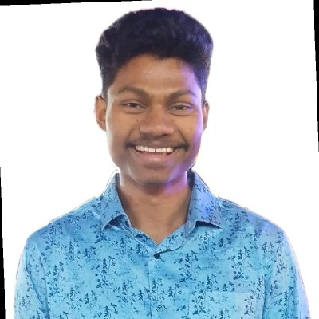

I am Hemant Singh
| Year of graduation | Degree | Institution |
|---|---|---|
| 2025 | B.Tech. | Indian Institute of Technology, Goa |
| 2021 | 12th Standard or equivalent | Jawahar Navodaya Vidyalaya Raigarh Chhattisgarh |
| 2019 | 10th Standard or equivalent | Jawahar Navodaya Vidyalaya Raigarh Chhattisgarh |
learned something new with coading.
I came to know about many codding sites and competitions.
I participated in many fests.